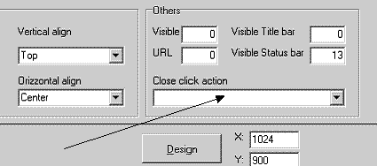

In questo capitolo vedremo i vari eventi disponibili in o2 e come utilizzarli.
Gli eventi sono tutti quei momenti in cui l’o2runtime può passare il controllo
ad un’azione o ad un programma indicati dal programmatore ed hanno due scopi:
Gli eventi si dividono in 4 categorie in dipendenza degli oggetti su cui sono
definiti e del tipo di esecuzione che possono invocare.
Ad oggi l’o2 prevede un solo evento di programma e cioè la initial
action.
La initial action è l’azione eseguita automaticamente dal
programma ogni volta che viene chiamato ed è possibile impostarla
dall’omonimo campo nella pagina di Program properties del
programma.

Come abbiamo visto, tramite questo evento è possibile impostare una
vista del programma su specifici valori di ricerca ma risulta molto utile anche
per effettuare controlli e valorizzare variabili all’entrata in un programma con
interfaccia.
Indispensabile l’utilizzo della initial action per i programmi batch:
non mostrando alcuna interfaccia all’utente, tali programmi rimangono in
esecuzione per la durata della loro gerarchia esecutiva, il cui primo passo è
sempre la initial action, in assenza della quale non eseguono
alcuna azione.
Gli eventi di interfaccia sono di numero e di forma più varia e servono ad
indicare le azioni di programma da eseguire a fronte delle varie funzionalità
offerte dai controlli di interazione con l’utente.
Il controllo window
Prevede un solo evento di Close click action, la cui azione viene
indicata nella pagina di proprietà della form:

L’azione qui indicata verrà eseguita quando l’operatore clicca sulla crocetta
di chiusura della finestra e può essere utile per eseguire azioni all’uscita dal
programma o per impostare criteri di visibilità per le finestre.
I controlli associati a campi (Edit control, List/combo box,
Check box, Text area e Multi page)
Implementano tutti un evento di on change, controllabile tramite 2
proprietà della finestra Object inspector, presente durante la sessione
di editing della form.

La proprietà Action indica l’azione da eseguire a fronte di una
modifica al valore del controllo: l’azione verrà eseguita al prossimo ritorno al
server.
La proprietà Submit on change permette di indicare un’espressione
che, se valutata a "true", forza il ritorno al server quando si abbandoni il controllo
dopo averlo modificato. Il comportamento, guidato da un javascript,
è lo stesso che se l’operatore premesse un pulsante di submit ogni
qualvolta abbia apportato modifiche al controllo: questo permette di aggiornare le
viste e di eseguire l’azione indicata nella proprietà Action del controllo ad
ogni modifica del valore.
L’uso delle due proprietà permette di utilizzare gli eventi di on change
dei controlli associati a campi, in modo da far reagire in maniera dinamiche e
tempestiva il contesto del programma alle eventuali variazioni di valore dei campi
e delle variabili che si utilizzano: particolarmente utile si dimostra nella validazione
dei valori inseriti e nell’aggiornamento delle link, delle viste dipendenti e delle viste
in base a campi di selezione.
I controlli button e image
Implementano l’evento di click, che prevede (proprietà
Action dell’Object inspector) l’indicazione di un’azione da eseguire
quando l’operatore prema il pulsante sinistro del mouse su tali controlli.
L’utilizzo di questo evento è semplice da capire e costituisce la base
dell’interazione con pulsanti e aree grafiche cliccabili: permette di implementare
facilmente menu di comandi personalizzati e gli effetti interattivi più frequenti di
ogni applicazione.